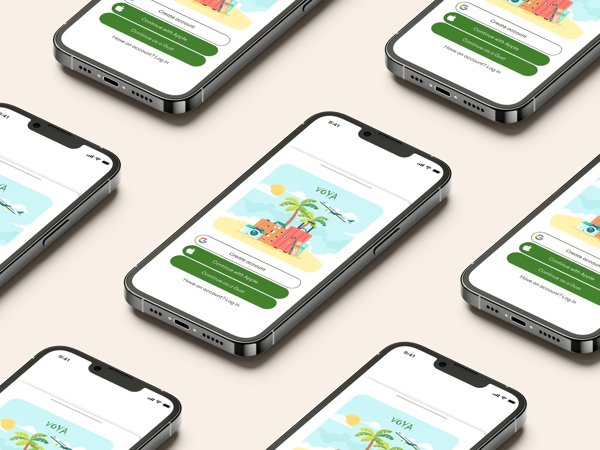
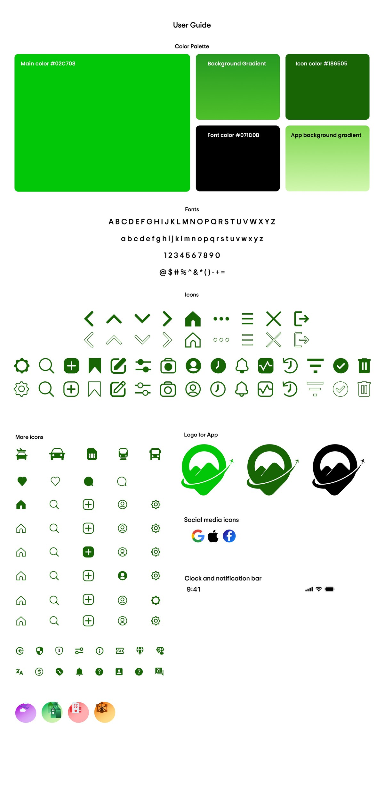

Case file · UI/UX
VOYA travel app
A travel companion app that keeps finding, planning and booking a trip in one friendly place.

- Project
- Mobile app, UI/UX design
- Process
- Persona, sitemap, user flow, wireframes, style guide
- Tools
- Figma
- Outcome
- 12 high-fidelity screens
01The brief
Planning a trip usually means jumping between many apps for stays, flights, activities and transport. VOYA brings them together so travellers can discover, plan and book in one place.
02The user
Luna Castro, 25, is a scientist in Singapore who loves new places, local food and sharing her trips online. She is tired of needing many apps to book, plan and find her way, of cluttered travel apps, and of recommendations she can't trust.
03Research and structure
04Style guide

A small design system kept all 12 screens consistent before any final screen was built.
- Colour
- Main green #02C708, icon green #186505, font colour #071D0B, plus a soft green background gradient.
- Type
- One clean, rounded sans serif for headings, body text and numbers.
- Icons
- Every icon drawn in a filled and an outline version, so the active tab is easy to spot.
- Logo
- A map pin with mountains and a flight path, in green, dark green and black.
- Extras
- Category icons for stays, activities, hotels and flights, social sign-in buttons and the system bar.